Mollusca: 26 individual model corrections
v0.6.32 · 26 October 2026 · 100 final viewer states, 92 earlier states, 52 credited comparison sheets.
All 26 existing Mollusca received an initial external-form correction and individual screenshot comparison. Models remain partly stylized and unmeasured. This is an authored educational reconstruction review, not independent specialist approval, a 90-percent accuracy score, validated biomechanics, physiology or a photorealism certification.
Synchronous main-viewer canvas captures: side/front/top Observe for every mollusc, an enabled action when implemented, plus selected octopus reach/support/underside phases. Actual reference photographs or shells are separate individuals, not fitted 3D coordinates or photographic model textures. Rejected preview, shadow-only and folded-scallop drafts are excluded from final totals.
Shells lack many internal diagnostic structures, natural epibionts and measured microtexture. Coiled-shell envelopes and sutures are external approximations, not reconstructed whorl volumes. Snail glides omit pedal/ciliary traction and mucus. Valve studies omit water, gills, particles and swimming forces. Octopus skin, arm ratios, papillae, sucker spacing and support/contact are qualitative; jetting, prey handling and physiology are absent. Near-unseen underside details cannot be verified from a dark capture. Existing species identities/photos are retained with their source caveats; this pass does not independently determine each specimen.
Scientific source access and reuse
Selected authoritative descriptions, taxonomic context and primary indexed abstracts/results were consulted. No new measured trajectories were fitted. Octopus crawling draws only on Levy et al. 2015 abstract/process context, not its video or tracked coordinates; sucker context does not reconstruct full internal sucker anatomy. Nacella treatment text was read, not its Figure 8. Chlamys museum description was indexed text after direct access timed out. Existing historical citations retain their original access scope; inclusion does not assert a fresh full-text or figure review. No private paper figures are republished.
Original numerical geometry/surface code follows the project MIT license. No organism photograph or AI image was generated. Reference pixels retain the exact individual creators and grants below. Each comparison sheet includes a resized reference; reuse it under that photograph’s applicable license, including attribution/share-alike where required. Do not apply MIT to the photographs.
Octopus vulgaris · Common octopus
Inspect the current model ↗
Earlier defects: Upright stacked mantle/head; identical pinwheel arms with rigid group rotations; no broad basal web; smooth uniform skin and torus-like suckers.
Changes: Continuous low mantle-neck-head silhouette, horizontal pupils, lateral funnel exterior, eight differently extended tapered arms, basal web, two retained rows of recessed discs and multiscale original skin relief. Finite selected-arm extension/recovery and separate exploratory reach deform the same arms, web and suckers. Final compiled-page comparison embedded arm roots into the head to reduce joint-like ends.
Still unresolved: Mantle/head ratios, papilla fields, sucker number/spacing, arm lengths and contact mechanics remain unmeasured. Oral beak and internal organs are omitted; no live camouflage, suction, force, fluid, prey handling or jet escape. The source-labelled Commons animal has no verified locality here; the O. vulgaris complex caveat remains.
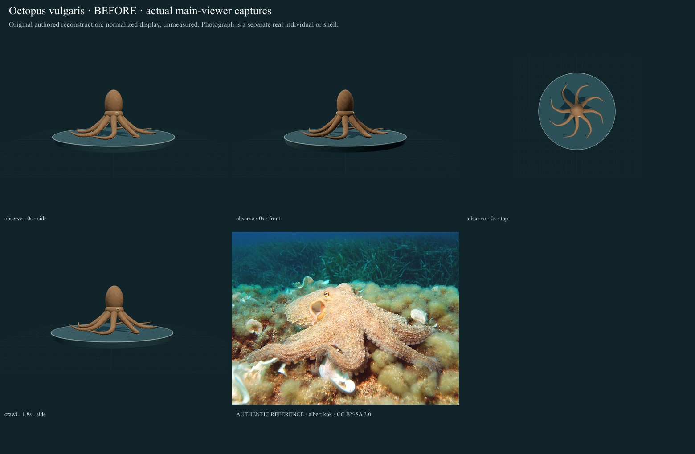
Before correction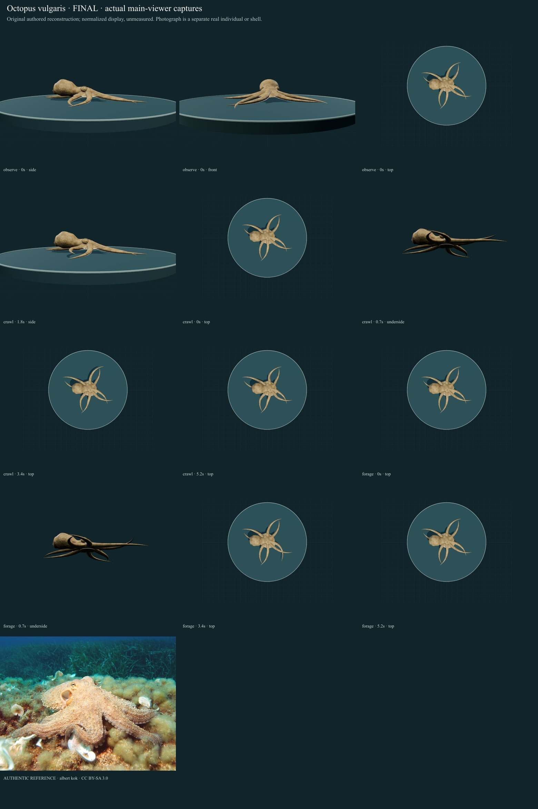
Final inspected states · full sheetReference: albert kok · CC BY-SA 3.0. Existing licensed delivered bytes retained; no new original-resolution retrieval claimed. Photo is a separate individual/shell, not a texture or measured geometry.
Exact delivered reference checksum
4d58b1f7db3d58a35cde5b0532ec99f9a12dda2565c3a88261e85bdfeca598e0Movement scope
- Arm support / extension study · partial: Finite 5.2-second authored contact/extension sequence on the same eight retained arms, web and sucker discs. Three selected recovery events retain other contact targets; no measured cadence, suction, contact forces, full self-collision or complete crawling mechanics.
- Exploratory arm reach · partial: One anterior arm bends and lifts, then returns on the same surface. Food contact, prey manipulation, ingestion and sensing are not simulated.
- Jet escape — pending · unavailable: Jet escape is unavailable: funnel flow, mantle contraction, propulsion and water forces are not implemented.
Evidence and its access scope
Lymnaea stagnalis · Great pond snail
Inspect the current model ↗
Earlier defects: Separated spiral whorls and an oversized open aperture, pale cylindrical neck and weak surface detail.
Changes: Continuous pointed, high-spired shell envelope with recessed spiral sutures and an actual apertural opening; fine wrinkles, ochre-brown pigment, connected neck/foot and two flattened triangular tentacles with basal eyes.
Still unresolved: Whorl profile, chirality diagnosis, aperture edge, soft-body insertion, pigmentation and ciliary locomotion remain qualitative; no feeding, mucus or physiological mechanism.
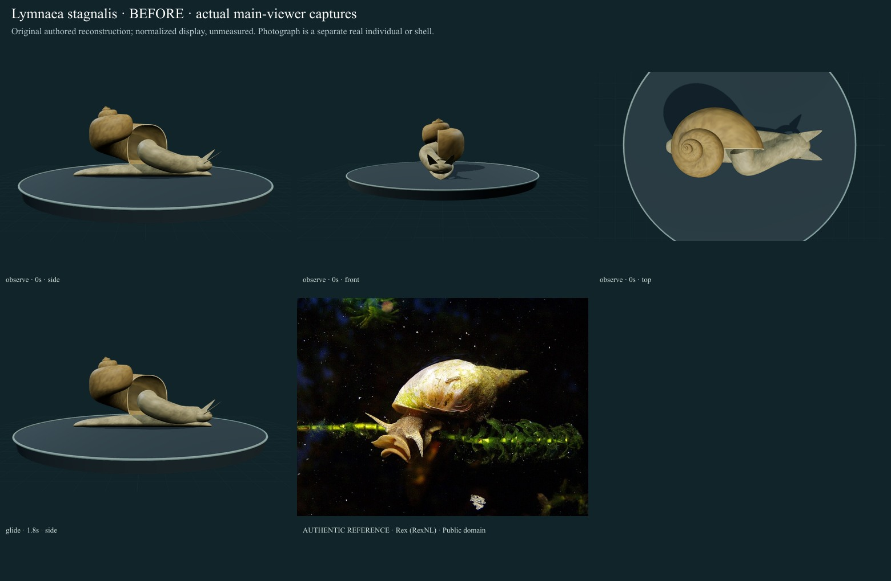
Before correction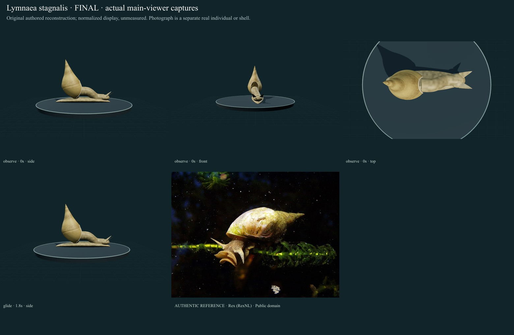
Final inspected states · full sheetReference: Rex (RexNL) · Public domain. Existing licensed delivered bytes retained; no new original-resolution retrieval claimed. Photo is a separate individual/shell, not a texture or measured geometry.
Exact delivered reference checksum
1debad4c168711b20077572b86383ca23cb5be31863f581de5a139ee26a6d2ccMovement scope
- Gliding study · partial: Small tentacle gestures and a short held-forward glide on the same retained shell/body. No terrestrial Cornu pedal-wave mechanism is assigned to this aquatic species; traction, ciliary beating, feeding and retraction remain absent.
Evidence and its access scope
Cornu aspersum · Garden snail
Inspect the current model ↗
Earlier defects: Flat planispiral-looking shell, clean regular bands, featureless pale foot and thin rod eyestalks.
Changes: Globose shell envelope with a low spire, interrupted brown spiral pigment and cut aperture; retained four tentacles, terminal eyes on the upper pair, granular skin and bounded forward gliding gesture.
Still unresolved: The shell remains a qualitative envelope rather than a measured helicoidal individual. Flecks, lip, tissue folds, mucus/traction and pedal waves remain incomplete; no realistic eating or retraction.
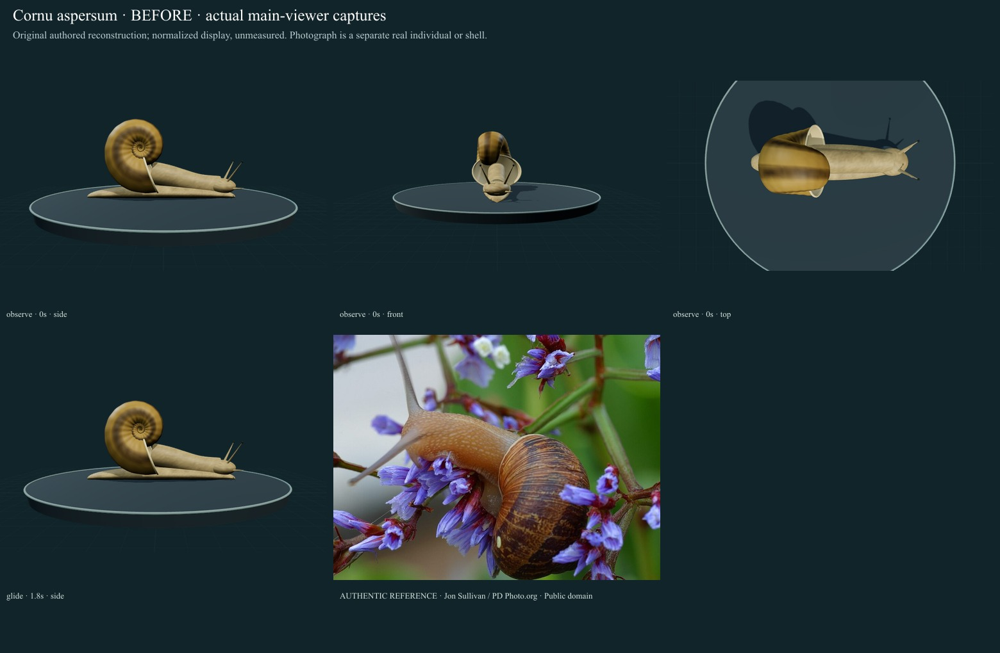
Before correction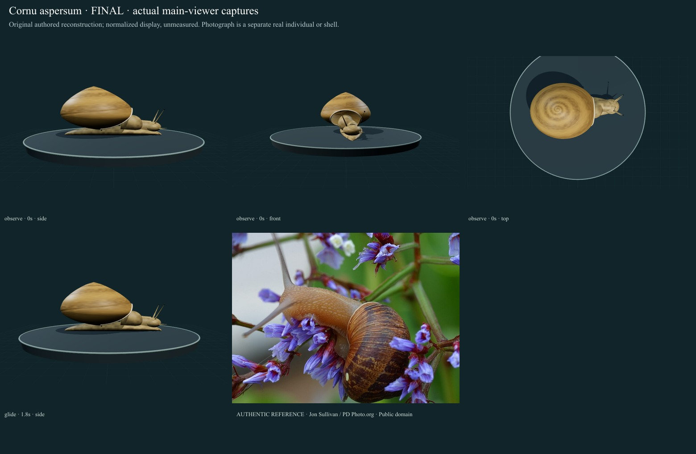
Final inspected states · full sheetReference: Jon Sullivan / PD Photo.org · Public domain. Existing licensed delivered bytes retained; no new original-resolution retrieval claimed. Photo is a separate individual/shell, not a texture or measured geometry.
Exact delivered reference checksum
3ed286cb1b75dea00a7e52f3895f74d0b095d5ca6a7835c60b50b3d7750c3be5Movement scope
- Gliding study · partial: Upper eye tips remain attached to locally bending stalks during a bounded five-second glide, then hold. The shell remains rigid. No ventral pedal wave, mucus, muscular activation, feeding, retraction or measured speed is simulated.
Evidence and its access scope
Mytilus edulis · Blue mussel
Inspect the current model ↗
Earlier defects: Generic low symmetric oval, bright seam and repetitive striping instead of the selected dark inequilateral shell.
Changes: Tapered inequilateral blue-black valves, original growth-line relief and variable sheen, persistent byssal threads and hinge-only upper-valve gape.
Still unresolved: Shell asymmetry, umbo/ligament, margin fit, erosion and internal soft anatomy remain simplified; the selected photo includes prepared cut/open shells and does not demonstrate live feeding.
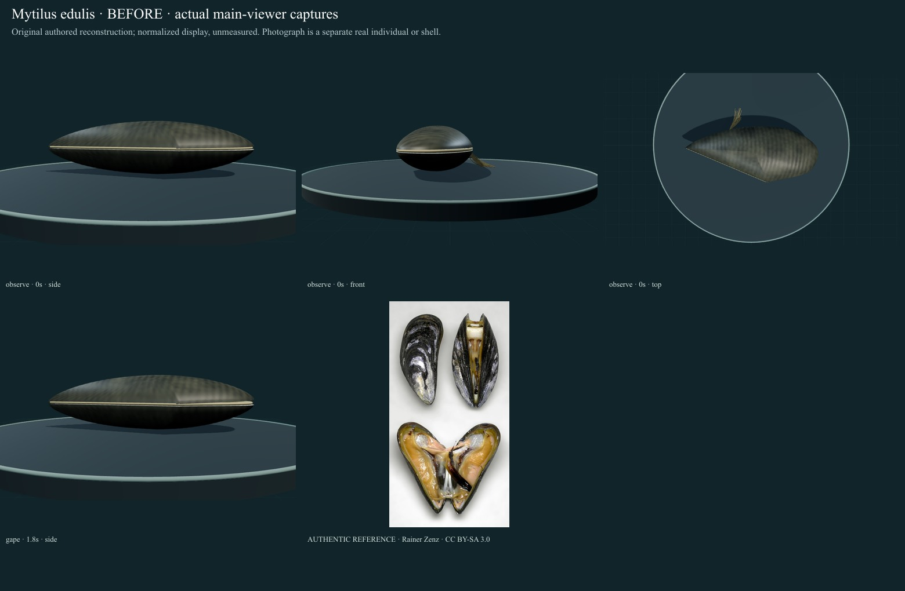
Before correction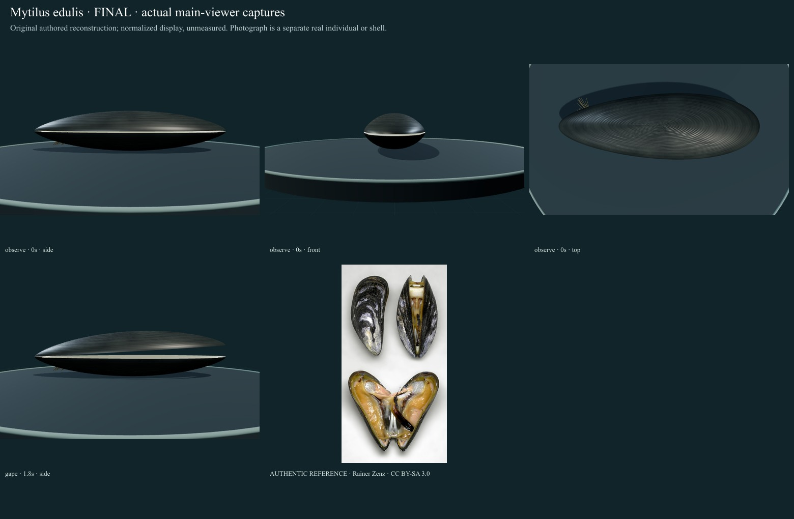
Final inspected states · full sheetReference: Rainer Zenz · CC BY-SA 3.0. Existing licensed delivered bytes retained; no new original-resolution retrieval claimed. Photo is a separate individual/shell, not a texture or measured geometry.
Exact delivered reference checksum
55c5499f8e707bad8dd8e4901f6c934ec1913211a1332863eb8657dd5d37f51fMovement scope
- Filtration — pending · unavailable: Filtration is not implemented. Separate partial valve gape moves the same upper valve about its hinge while lower valve and byssal anchors remain fixed; no filtering particles, flow or measured environmental response.
- Valve gape study · partial: Filtration is not implemented. Separate partial valve gape moves the same upper valve about its hinge while lower valve and byssal anchors remain fixed; no filtering particles, flow or measured environmental response.
Evidence and its access scope
Pecten maximus · Great scallop
Inspect the current model ↗
Earlier defects: Generic shallow fan with weak radial ribs, flat pale upper surface and uniform pigment.
Changes: Closed fan outline and ears, strongly convex lower right valve versus flat upper left valve, selected 16 radial ribs, numerical pigment and retained hinge articulation. Screenshot review removed reversed hinge-shoulder triangles and reduced circular growth-band dominance while strengthening radial relief.
Still unresolved: Ears/hinge microanatomy, exact rib coordinates, mantle attachment, optics and species-specific muscle/jetting remain approximate. The shell photograph is not live swimming evidence. Narrow byssal/auricular notches are simplified to avoid overlapping loft triangles. Rib amplitude, radial fan angles, pigment and growth rings remain authored rather than measured; no biological swimming propulsion is implemented.
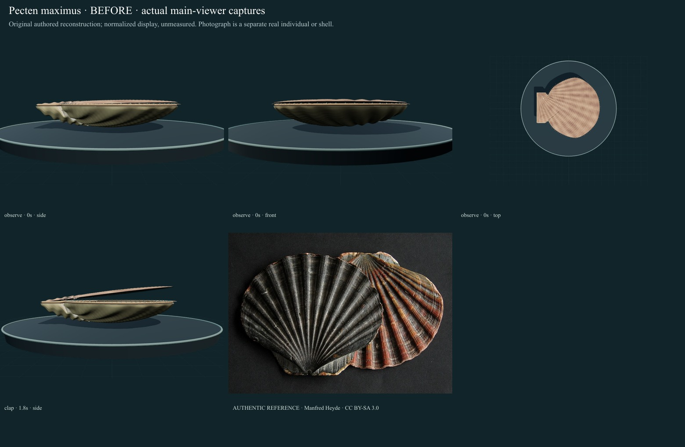
Before correction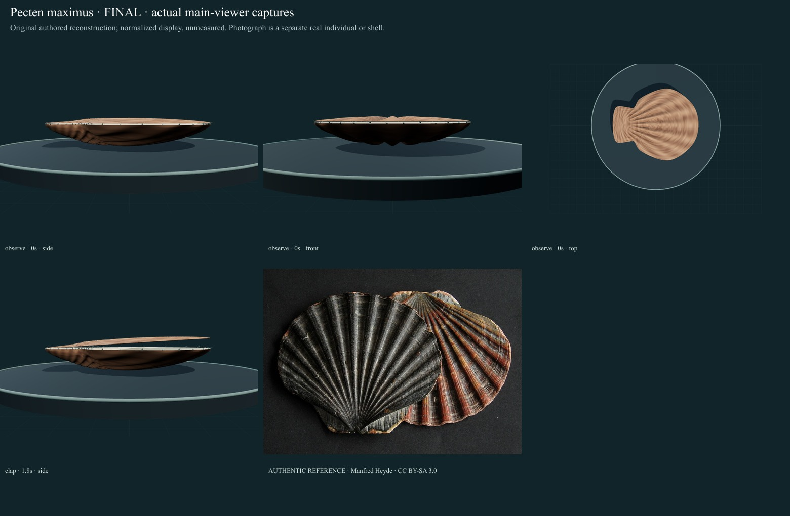
Final inspected states · full sheetReference: Manfred Heyde · CC BY-SA 3.0. Existing licensed delivered bytes retained; no new original-resolution retrieval claimed. Photo is a separate individual/shell, not a texture or measured geometry.
Exact delivered reference checksum
f4e98188fbf75c355cb9b6a5a3afe5bdef01e57bdb81006a31002310e1366bd9Movement scope
- Valve-clap study · partial: The same upper left valve opens/closes about the retained hinge over the stable convex right valve. This is a partial clap gesture; jetting, swimming displacement, adductor forces and calibrated timing are absent.
Evidence and its access scope
- Pecten maximus - BIOTIC — Species account or morphology/biology context only. No measured geometry, trajectory, rate or physiological model imported. Retrieved source account; general morphology only, not validation of this reconstruction.
- GBIF · Accepted species taxonomy — Taxonomic name/rank/family matching only; not behavior or native-range evidence.
- Licensed real organism reference and imaging context — Actual reference image and original caption/creator/license; not universal phenotype or biological validation.
- MarLIN · Great scallop, Pecten maximus — Specialist account inspected for left-flat/right-convex valves, hinge ears, broad radial ribs and mantle-margin eyes. Swimming context is from the account; cited primary swimming experiments were not independently read or reproduced.
Ostrea edulis · European flat oyster
Inspect the current model ↗
Earlier defects: Smooth rounded bowl and repetitive surface noise fail the irregular scaly shell photograph.
Changes: Irregular oval outline, uneven original concentric lamella relief, flatter upper/right valve and deeper attached lower/left valve with retained hinge opening.
Still unresolved: Lamella thickness, local shell damage, substrate cementation and internal anatomy are not reconstructed from measurements; no filtration or flow is calculated.
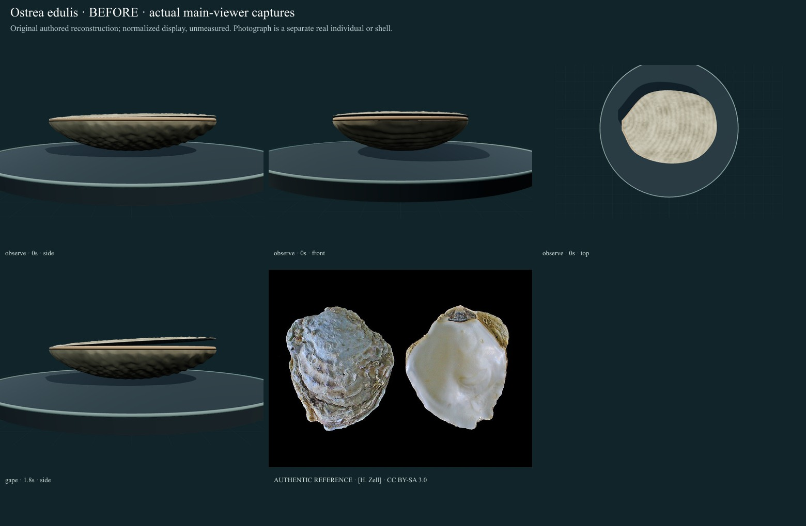
Before correction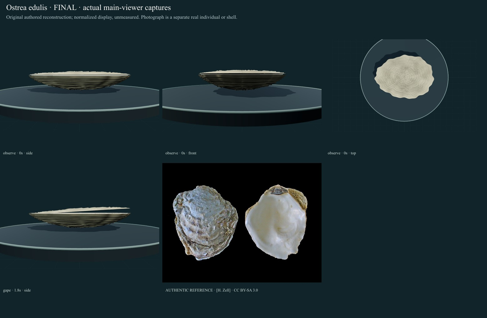
Final inspected states · full sheetReference: [H. Zell] · CC BY-SA 3.0. Existing licensed delivered bytes retained; no new original-resolution retrieval claimed. Photo is a separate individual/shell, not a texture or measured geometry.
Exact delivered reference checksum
61cbf4032cb899dc0f6a7a36de2d129f095fbc7075443e2f236c3de2a17e2c41Movement scope
- Filtration — pending · unavailable: Filtration is not implemented. A separate partial slow gape opens the same upper right valve over a fixed lower left cup. No salinity, temperature, light response, filtration or measured cycle is simulated.
- Valve gape study · partial: Filtration is not implemented. A separate partial slow gape opens the same upper right valve over a fixed lower left cup. No salinity, temperature, light response, filtration or measured cycle is simulated.
Evidence and its access scope
Patella vulgata · Common limpet
Inspect the current model ↗
Earlier defects: A uniform regular cone with identical fine rings and weak primary ridges.
Changes: Selected asymmetric apex, stronger coarse radial relief, off-white/ashen numerical pigment and a supported muscular foot/skirt.
Still unresolved: Shell wear, epibionts, height variation, marginal tentacles/gills and radular grazing remain incomplete; no feeding animation is claimed.
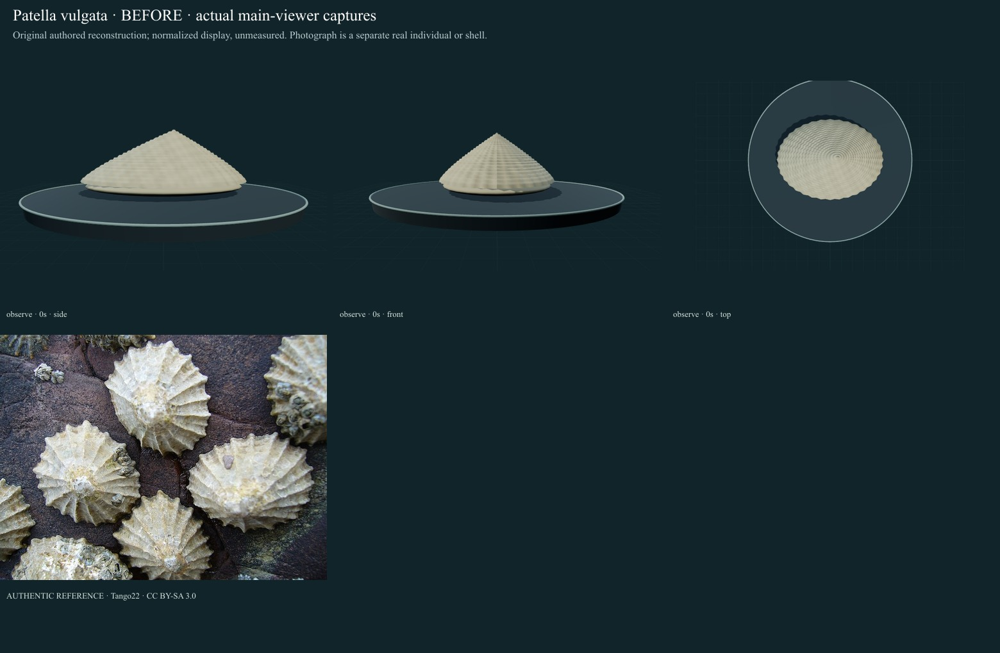
Before correctionFinal inspected states · full sheetReference: Tango22 · CC BY-SA 3.0. Existing licensed delivered bytes retained; no new original-resolution retrieval claimed. Photo is a separate individual/shell, not a texture or measured geometry.
Exact delivered reference checksum
c49e1092d5d124360db3709689df5e6cccf51f5fa045b62b68ecbe4ef3a00d24Movement scope
- Particle capture — pending · unavailable: Biological process documented in the species context; no working simulation of this mechanism is claimed.
Evidence and its access scope
Nacella concinna · Antarctic limpet
Inspect the current model ↗
Earlier defects: Nearly identical geometry/colour to P. vulgata rather than the selected elongated, lower Antarctic shell.
Changes: Elongated oval outline, lower anterior apex, weak radial sculpture and grey-brown surface variation, with a darker foot consistent with the selected primary treatment.
Still unresolved: Intertidal/subtidal plasticity is not fitted to a measured morph. Cephalic/mantle tentacles, encrustation, shell repair and radula are incomplete; no grazing simulation.
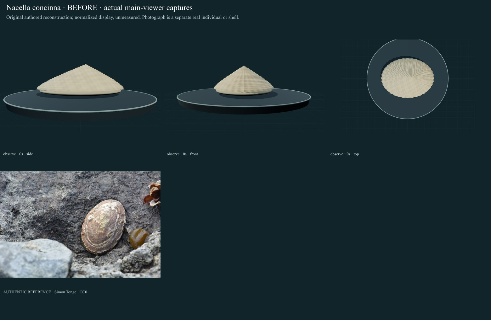
Before correction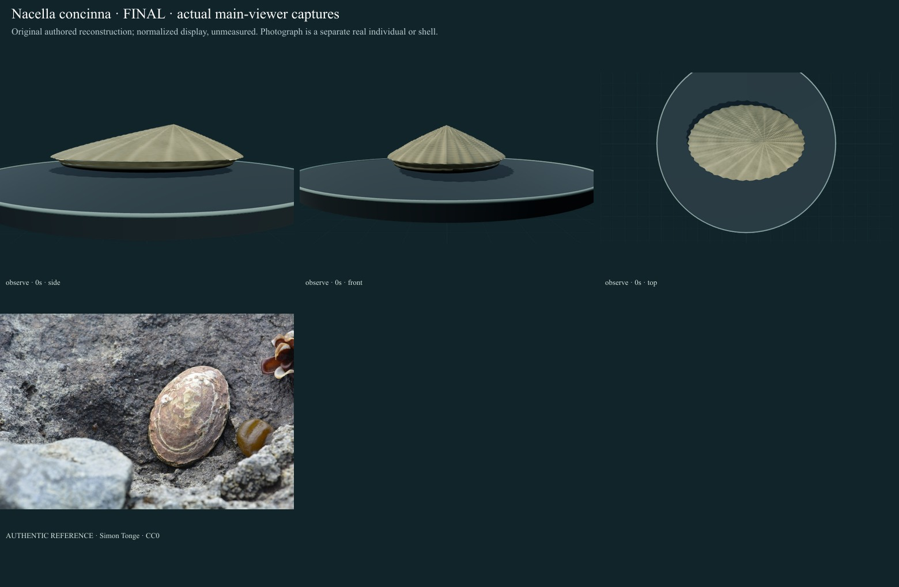
Final inspected states · full sheetReference: Simon Tonge · CC0. Existing licensed delivered bytes retained; no new original-resolution retrieval claimed. Photo is a separate individual/shell, not a texture or measured geometry.
Exact delivered reference checksum
0c10cb3f25eb5d16ea9a777ce1742b54966d0334e08e7844e29c450945dc9e39Movement scope
- Particle capture — pending · unavailable: Biological process documented in the species context; no working simulation of this mechanism is claimed.
Evidence and its access scope
Fissurella volcano · Volcano keyhole limpet
Inspect the current model ↗
Earlier defects: Regular generic cone, nearly circular tiny apical opening and no distinct rays.
Changes: Oval selected shell, genuine apical opening with rim, numerous fine radial ridges and muted pink/brown rays.
Still unresolved: Aperture elongation, exact ribs and ray arrangement, mantle/foot tissue and fine shell layers remain approximate; empty-shell photos do not establish living posture.
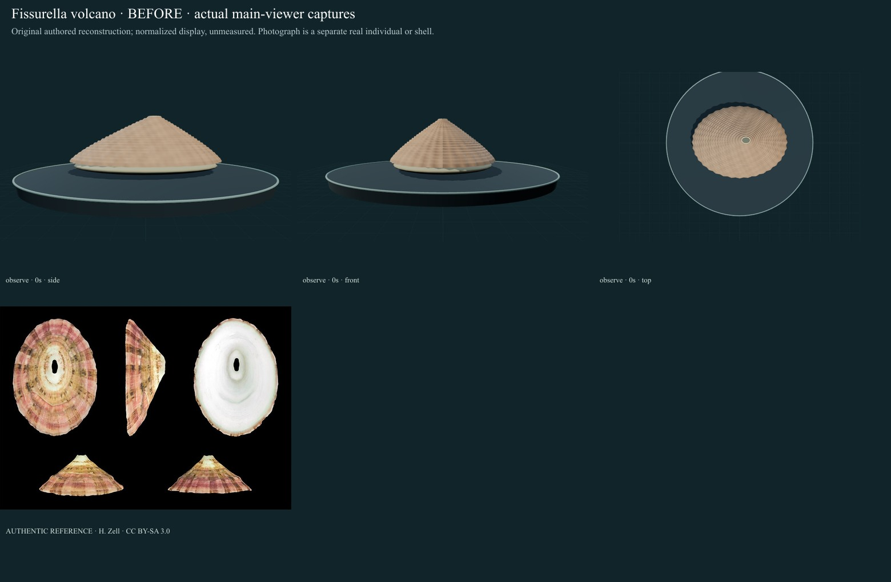
Before correction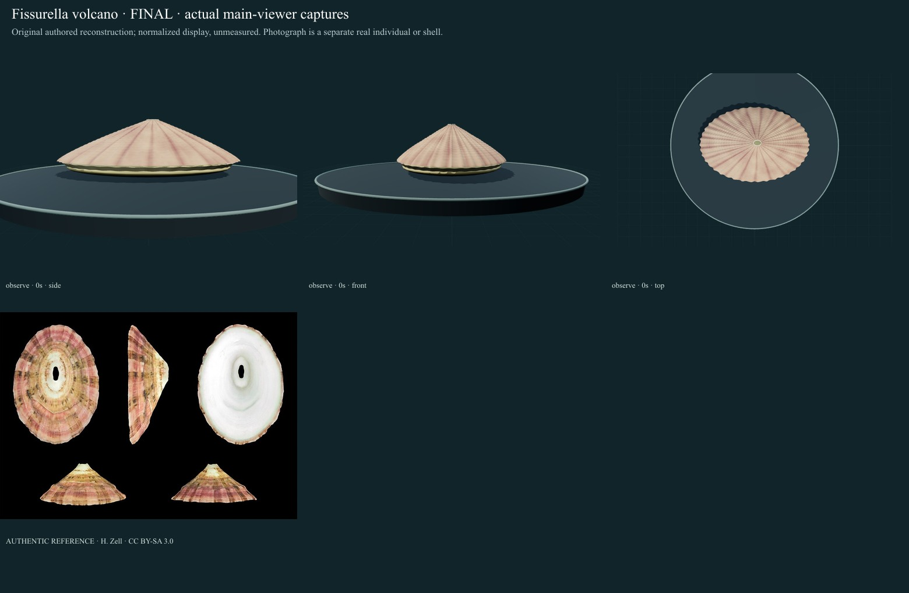
Final inspected states · full sheetReference: H. Zell · CC BY-SA 3.0. Existing licensed delivered bytes retained; no new original-resolution retrieval claimed. Photo is a separate individual/shell, not a texture or measured geometry.
Exact delivered reference checksum
a9c8bd2d902b537c8043c0b75da810d5ad4d32f956c01cdedef3af2cf350d3f1Movement scope
- Particle capture — pending · unavailable: Biological process documented in the species context; no working simulation of this mechanism is claimed.
Evidence and its access scope
- Just a moment... — Qualitative morphology/ecology context; no measurements or rates imported. Source specimens, laboratory conditions and historical taxon concepts may differ from the reference image. Full retrieval limited; indexed context/image and specialist follow-up remain necessary.
- GBIF · Accepted species taxonomy — Taxonomic name/rank/family matching only; not behavior or native-range evidence.
- Licensed real organism reference and imaging context — Actual reference image and original caption/creator/license; not universal phenotype or biological validation.
Haliotis rufescens · Red abalone
Inspect the current model ↗
Earlier defects: Flat pink cap, jagged cut pores, bare shell and sparse spike-like fringe.
Changes: Selected four perforated marginal respiratory pores, red-brown mottled ear-like shell, dark muscular body and a lower frilled epipodial edge with fine tentacle cues.
Still unresolved: Pore margins/spacing and the weakly coiled apex remain authored. Epibionts in the real photo are not abalone tissue and are not copied onto its skin; head, muscle, radula, nacre and grazing remain incomplete.
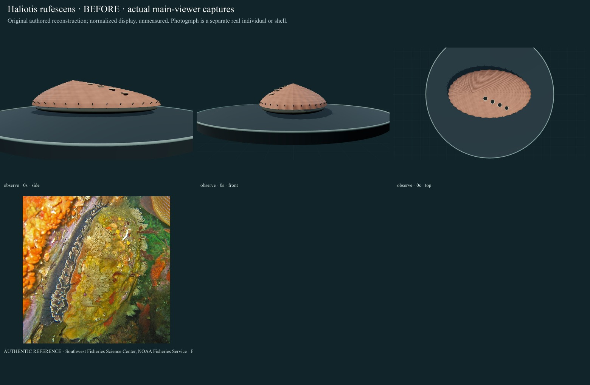
Before correction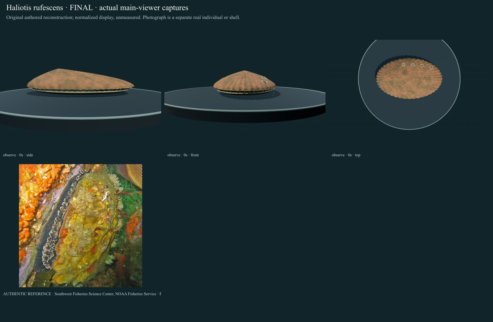
Final inspected states · full sheetReference: Southwest Fisheries Science Center, NOAA Fisheries Service · Public domain. Existing licensed delivered bytes retained; no new original-resolution retrieval claimed. Photo is a separate individual/shell, not a texture or measured geometry.
Exact delivered reference checksum
cc97dcfd4be207d438c9dd21ab45cbe405369f948756663a2e6a949ed1bfdc27Movement scope
- Algal grazing — pending · unavailable: This abalone grazes algae using a radula. Feeding movements and food removal are not implemented; no particle-filtering animation is claimed.
Evidence and its access scope
Haliotis tuberculata · European abalone
Inspect the current model ↗
Earlier defects: Generic flat cap, weak surface detail and cut pore outlines with sparse spikes.
Changes: Lower selected ear-shaped shell distinct from red abalone, six perforated marginal pores, subdued mottling, muscular foot and fine fringe cues.
Still unresolved: The reference is an empty encrusted shell; it does not validate the modeled soft tissues or living posture. Apex coiling, pore margins, nacre and grazing remain incomplete.
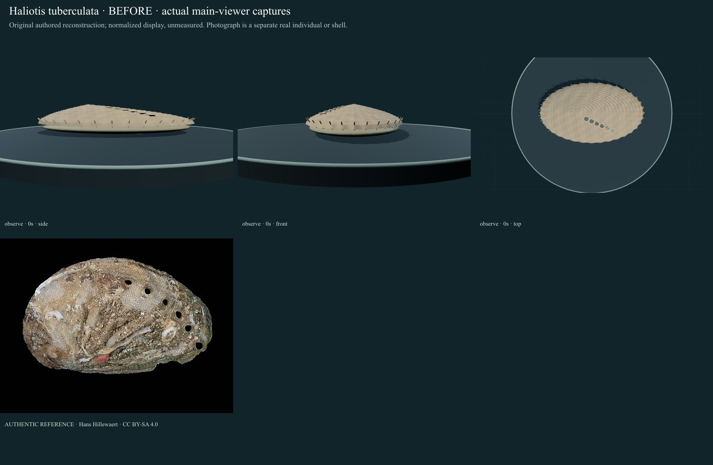
Before correction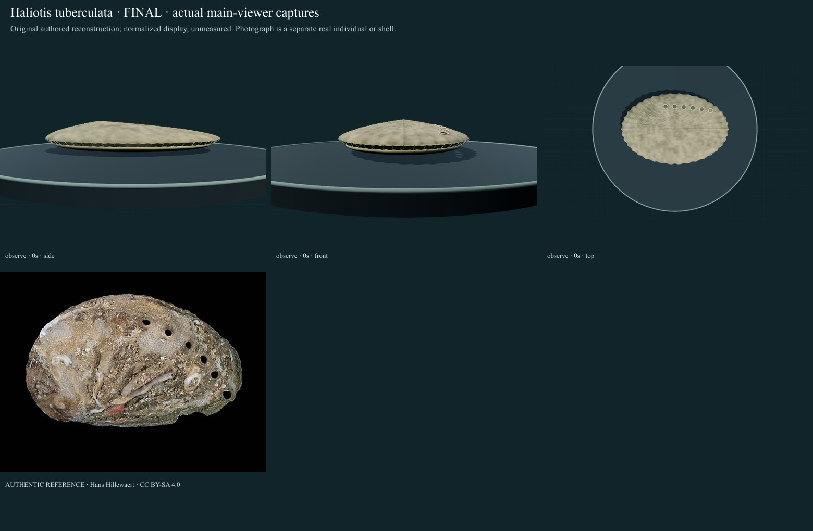
Final inspected states · full sheetReference: Hans Hillewaert · CC BY-SA 4.0. Existing licensed delivered bytes retained; no new original-resolution retrieval claimed. Photo is a separate individual/shell, not a texture or measured geometry.
Exact delivered reference checksum
d75fa7e33fd69e283034a1c33a517cad9d7ef7abd4a12340fe8e957bf3b54a2bMovement scope
- Algal grazing — pending · unavailable: This abalone grazes algae using a radula. Feeding movements and food removal are not implemented; no particle-filtering animation is claimed.
Evidence and its access scope
Littorina littorea · Common periwinkle
Inspect the current model ↗
Earlier defects: Open helix-like grey shell over a blocky foot, missing dark shell and tentacle banding context.
Changes: Solid conical shell envelope with aperture, spiral sutures and dark brown pigment, finer supported foot and two broad flattened tentacles with eyes near their bases.
Still unresolved: Shell proportions, white columella, operculum, actual tentacle bars and radula are not fully resolved. A short tentacle bend is not crawling or feeding.
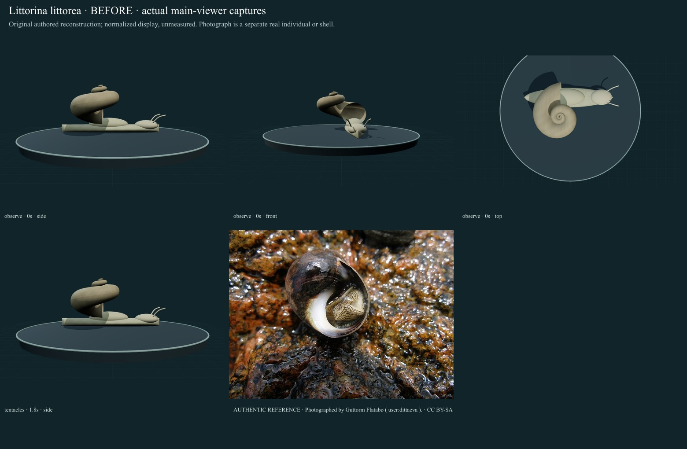
Before correction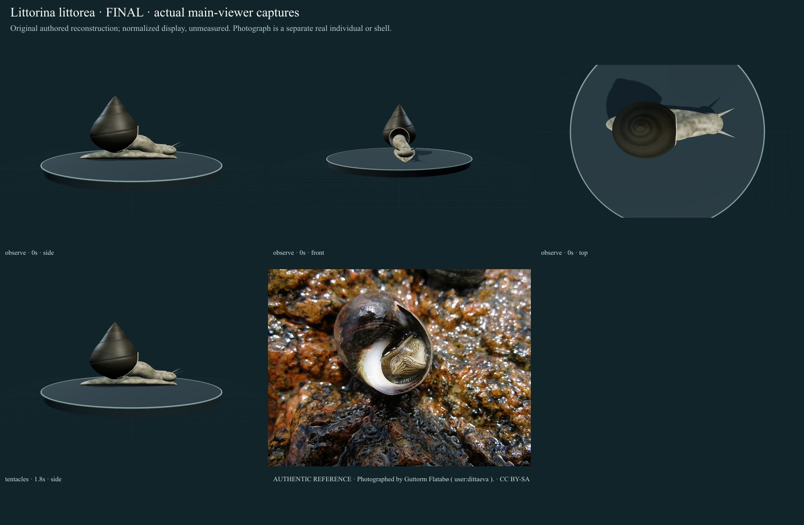
Final inspected states · full sheetReference: Photographed by Guttorm Flatabø ( user:dittaeva ). · CC BY-SA 3.0. Existing licensed delivered bytes retained; no new original-resolution retrieval claimed. Photo is a separate individual/shell, not a texture or measured geometry.
Exact delivered reference checksum
a02337c8af149955d466bf5240f9a82d43e8456c561b4f3551d65d8cd6a13050Movement scope
- Tentacle study · partial: Authored reference reconstruction from qualitative morphology and the separately licensed image. Shape, pigmentation, stage, dimensions and playback are not measured or independently validated. Appendage/deformation controls are partial studies; feeding, forces, fluid dynamics and calibrated locomotion are absent.
Evidence and its access scope
Littorina obtusata · Flat periwinkle
Inspect the current model ↗
Earlier defects: The same open coil as L. littorea, recoloured yellow; lacks a dominant globose last whorl.
Changes: Separate low-spired, enlarged body-whorl envelope and yellow selected colour form, cut aperture and broad tentacle anatomy.
Still unresolved: Spire/aperture ratios, fine reticulation, operculum and differentiation from L. fabalis need measured specialist review. Yellow is one colour form, not a species diagnosis.
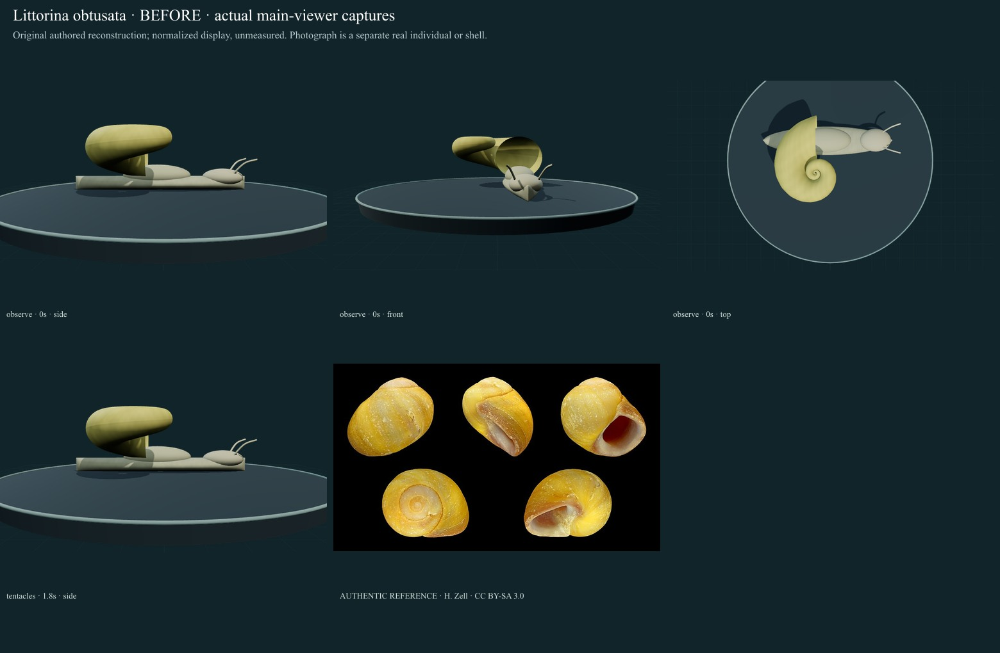
Before correction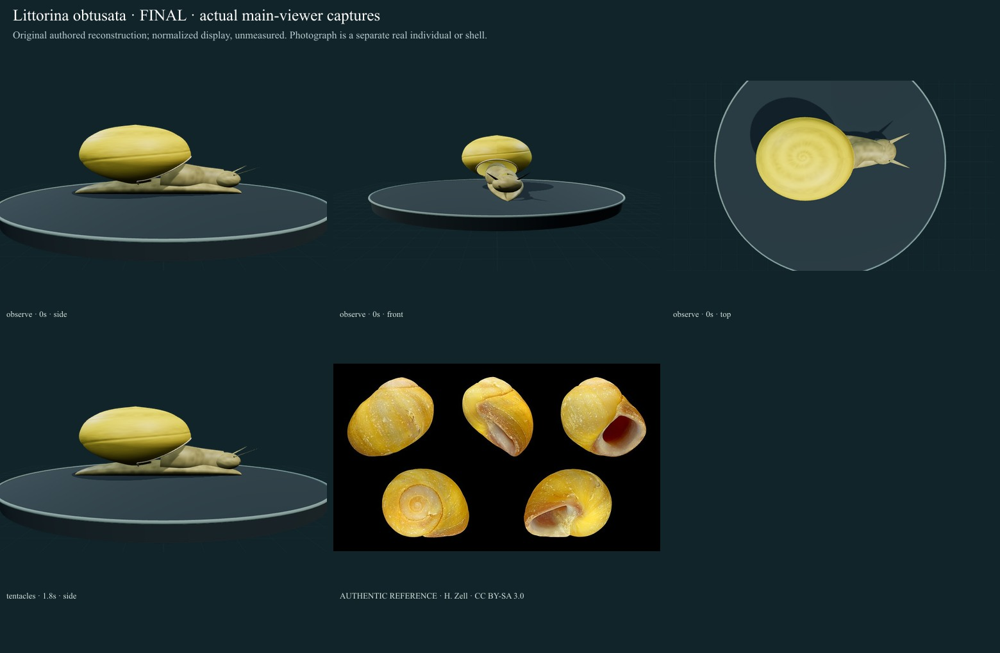
Final inspected states · full sheetReference: H. Zell · CC BY-SA 3.0. Existing licensed delivered bytes retained; no new original-resolution retrieval claimed. Photo is a separate individual/shell, not a texture or measured geometry.
Exact delivered reference checksum
e957f6b80c94e0b7c82e947cec43aa2fe2fdd2c4acf8f1a267400d3bcd646cc0Movement scope
- Tentacle study · partial: Authored reference reconstruction from qualitative morphology and the separately licensed image. Shape, pigmentation, stage, dimensions and playback are not measured or independently validated. Appendage/deformation controls are partial studies; feeding, forces, fluid dynamics and calibrated locomotion are absent.
Evidence and its access scope
Nucella lapillus · Dog whelk
Inspect the current model ↗
Earlier defects: Generic upright open coil and featureless cream body, with no distinct stout body whorl/canal.
Changes: Solid selected short-spired shell envelope, subdued spiral ridges/banding, broad pale foot and an illustrative siphon exterior.
Still unresolved: Siphonal canal/lip teeth, eye placement and radular drilling/prey handling are incomplete; variable shell shape/colour is not an independently determined specimen.
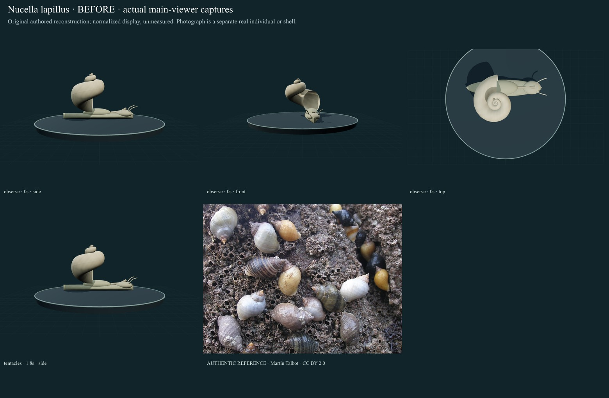
Before correction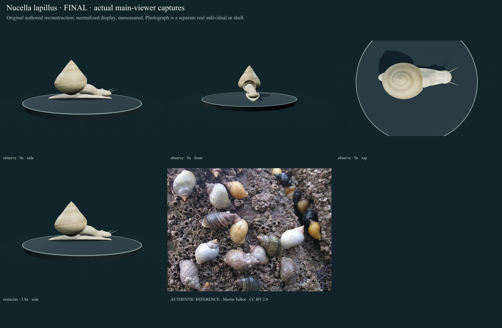
Final inspected states · full sheetReference: Martin Talbot · CC BY 2.0. Existing licensed delivered bytes retained; no new original-resolution retrieval claimed. Photo is a separate individual/shell, not a texture or measured geometry.
Exact delivered reference checksum
9b41bf1b7b78cb573496ff08b2af17557154dc04321c025de5ae36da22abdb3fMovement scope
- Tentacle study · partial: Authored reference reconstruction from qualitative morphology and the separately licensed image. Shape, pigmentation, stage, dimensions and playback are not measured or independently validated. Appendage/deformation controls are partial studies; feeding, forces, fluid dynamics and calibrated locomotion are absent.
Evidence and its access scope
Buccinum undatum · Common whelk
Inspect the current model ↗
Earlier defects: Generic open coil with a few lobes; underspecified sculpture, foot, aperture and siphon.
Changes: Taller selected shell envelope, spiral and axial relief, brown/beige surface variation, apertural opening, broader pale soft body and siphon cue.
Still unresolved: The seven-to-eight-whorl source context is not a fitted whorl count or a complete internal shell model. Raised axial folds, canal, operculum and feeding remain incomplete.
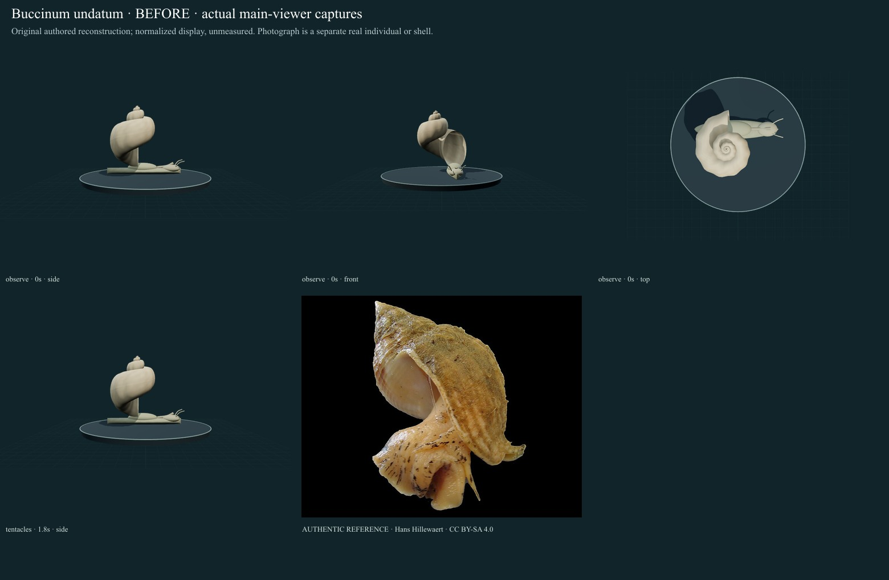
Before correction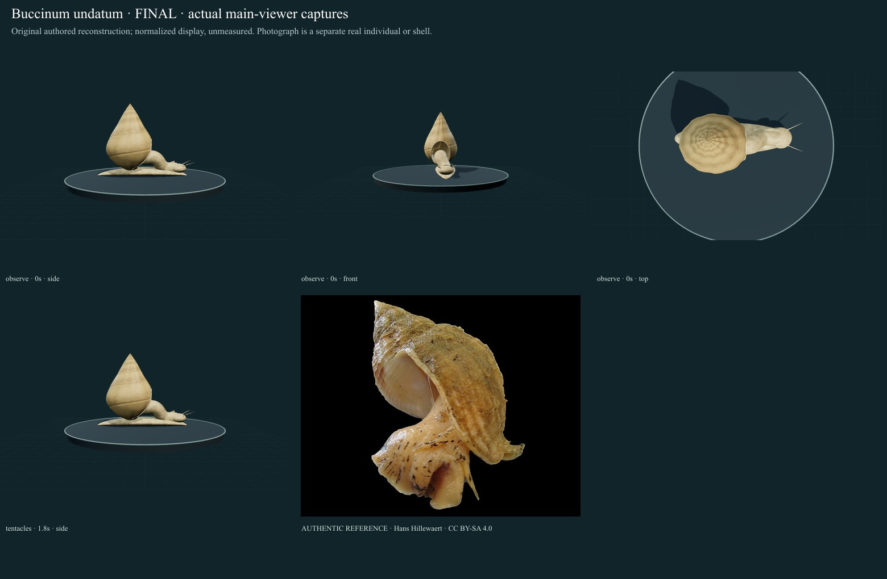
Final inspected states · full sheetReference: Hans Hillewaert · CC BY-SA 4.0. Existing licensed delivered bytes retained; no new original-resolution retrieval claimed. Photo is a separate individual/shell, not a texture or measured geometry.
Exact delivered reference checksum
66156ac7176c0f3a1221389b0f55ed7ea3467bfc6f8dd30d187a9d51a144285dMovement scope
- Tentacle study · partial: Authored reference reconstruction from qualitative morphology and the separately licensed image. Shape, pigmentation, stage, dimensions and playback are not measured or independently validated. Appendage/deformation controls are partial studies; feeding, forces, fluid dynamics and calibrated locomotion are absent.
Evidence and its access scope
Crepidula fornicata · Slipper limpet
Inspect the current model ↗
Earlier defects: Generic limpet cone with no internal shelf and no distinctive mottled shell.
Changes: More asymmetric oval cap with posterior apex, brown/cream original mottling and an explicit partial internal septum study.
Still unresolved: The curled spire, shelf rim, head and filter-feeding cilia are incomplete. The selected single shell is not the size/sex-structured living stack; filtration remains unavailable.
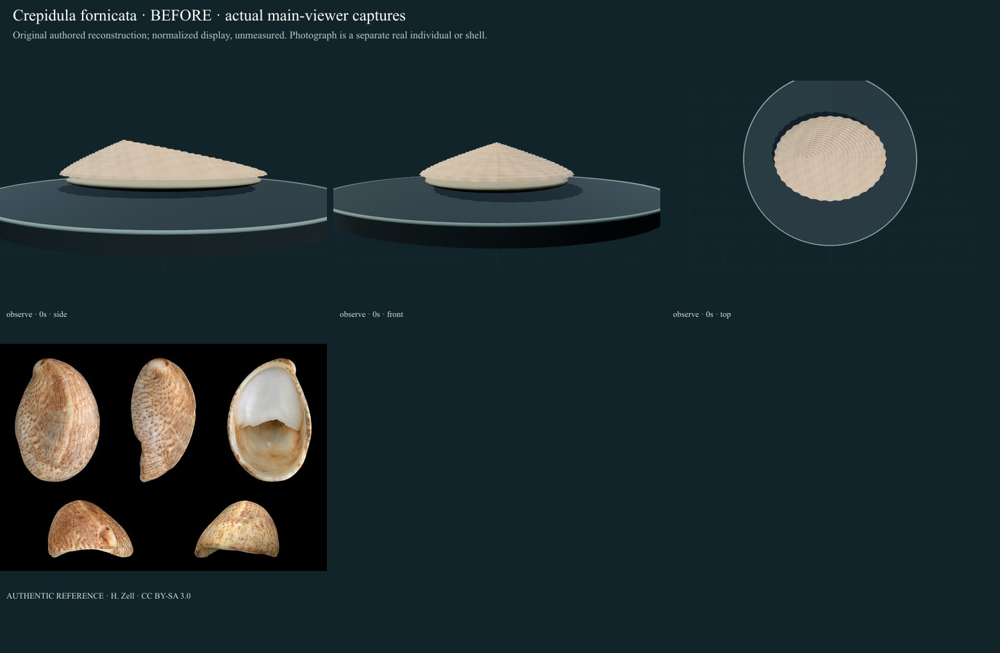
Before correction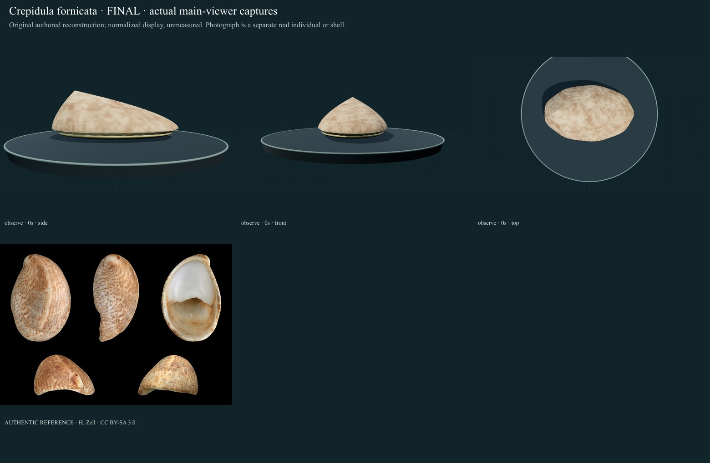
Final inspected states · full sheetReference: H. Zell · CC BY-SA 3.0. Existing licensed delivered bytes retained; no new original-resolution retrieval claimed. Photo is a separate individual/shell, not a texture or measured geometry.
Exact delivered reference checksum
af1bd783171c6fe41165136f47d8d4597f95735e2ac72d04c8ce93d1791b008fMovement scope
- Filtration — pending · unavailable: Biological process documented in the species context; no working simulation of this mechanism is claimed.
Evidence and its access scope
Stagnicola palustris · Marsh pond snail
Inspect the current model ↗
Earlier defects: Same open spiral scaffold as marine snails, cream body and weak pointed aperture.
Changes: Continuous narrow high-spired brown shell envelope, actual aperture, darker mottled soft body and triangular tentacles with basal eyes.
Still unresolved: The Stagnicola complex requires anatomical/genetic identification; the photo label is not independent confirmation. Fine whorls, genital anatomy and locomotion remain incomplete.
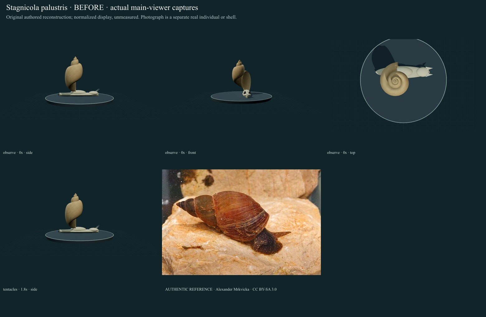
Before correction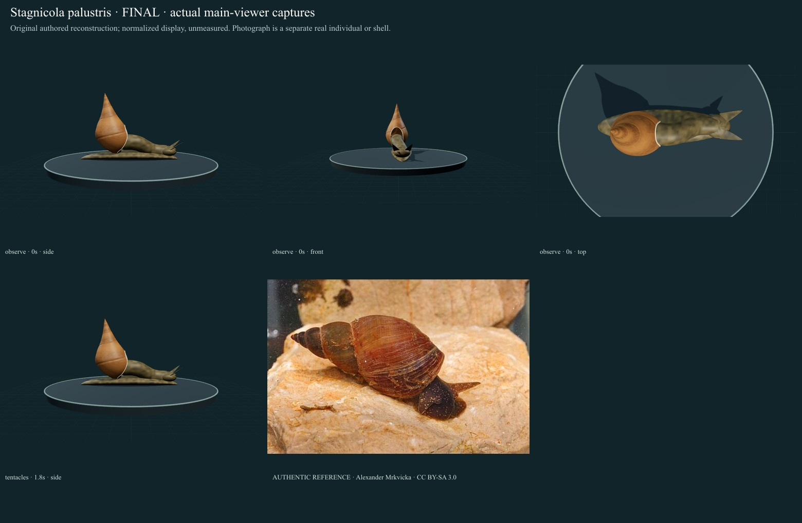
Final inspected states · full sheetReference: Alexander Mrkvicka · CC BY-SA 3.0. Existing licensed delivered bytes retained; no new original-resolution retrieval claimed. Photo is a separate individual/shell, not a texture or measured geometry.
Exact delivered reference checksum
b11db5d3d78f9644ec0fe94b3b3e702c65f80ec9b9c807a44891d757e8495248Movement scope
- Tentacle study · partial: Authored reference reconstruction from qualitative morphology and the separately licensed image. Shape, pigmentation, stage, dimensions and playback are not measured or independently validated. Appendage/deformation controls are partial studies; feeding, forces, fluid dynamics and calibrated locomotion are absent.
Evidence and its access scope
Planorbarius corneus · Great ramshorn
Inspect the current model ↗
Earlier defects: Thin open spiral hook over a generic pale marine-snail body.
Changes: Broad biconcave discoidal shell flanks with a spiral groove study, thicker shell volume, red-brown selected soft body and thin tentacles.
Still unresolved: Sinistral shell geometry and actual apertural/umbilical anatomy remain qualitative, with no measured shell/tissue fit. Red-brown is a selected phenotype; movement is only local tentacle bending.
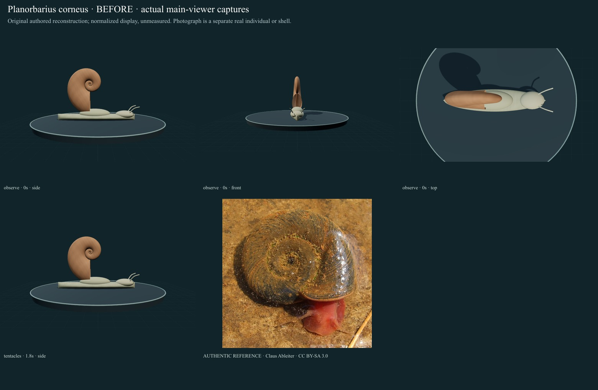
Before correction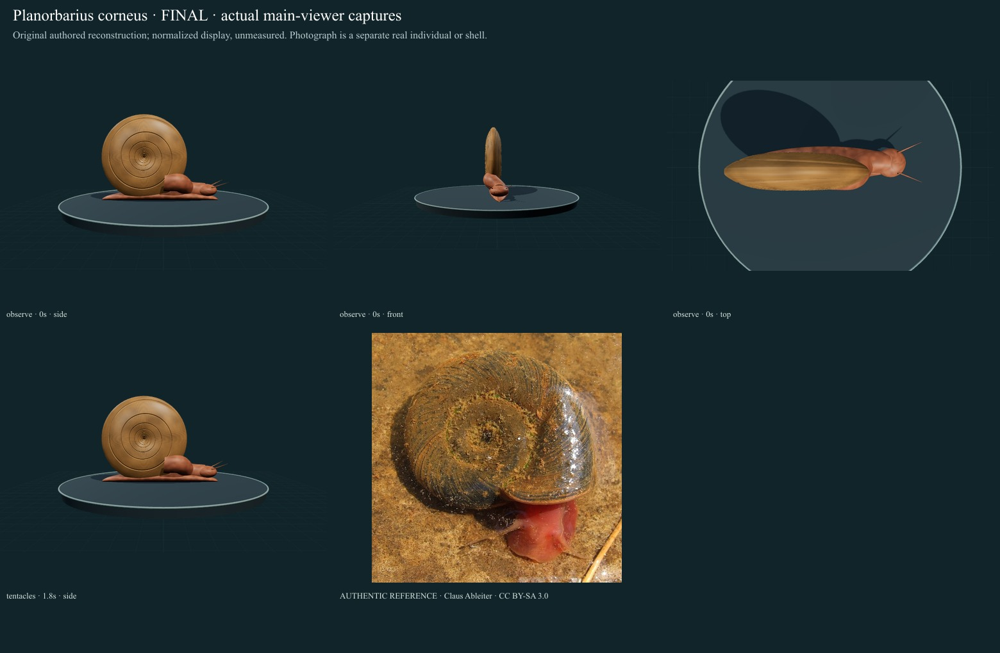
Final inspected states · full sheetReference: Claus Ableiter · CC BY-SA 3.0. Existing licensed delivered bytes retained; no new original-resolution retrieval claimed. Photo is a separate individual/shell, not a texture or measured geometry.
Exact delivered reference checksum
4f187b059e60150764786df2e8d21fc0a53dc791ebe5eba61817cfa46e0d48f5Movement scope
- Tentacle study · partial: Authored reference reconstruction from qualitative morphology and the separately licensed image. Shape, pigmentation, stage, dimensions and playback are not measured or independently validated. Appendage/deformation controls are partial studies; feeding, forces, fluid dynamics and calibrated locomotion are absent.
Evidence and its access scope
- Planorbarius corneus — Qualitative morphology/ecology context; no measurements or rates imported. Source specimens, laboratory conditions and historical taxon concepts may differ from the reference image. Retrieved account; does not validate geometry.
- GBIF · Accepted species taxonomy — Taxonomic name/rank/family matching only; not behavior or native-range evidence.
- Licensed real organism reference and imaging context — Actual reference image and original caption/creator/license; not universal phenotype or biological validation.
Cerastoderma edule · Common cockle
Inspect the current model ↗
Earlier defects: Generic round inflated disc, weak radial relief and almost uniform pale pigment.
Changes: More globular selected paired valves with 25 radial ribs, crossing growth relief and subdued brown/off-white pigment.
Still unresolved: Rib distribution, margin crenulation, hinge teeth, foot/siphons and natural burial are incomplete. The exposed model is a shell study, not a feeding posture.
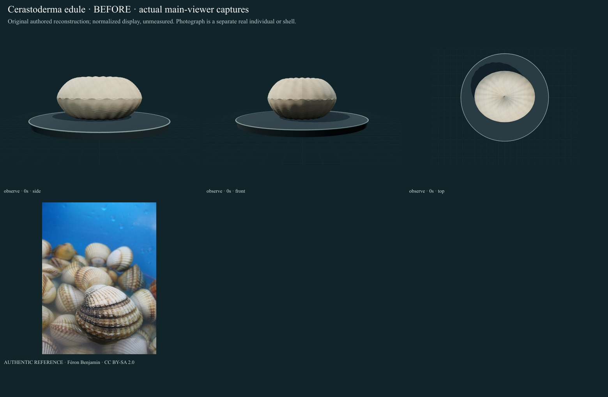
Before correction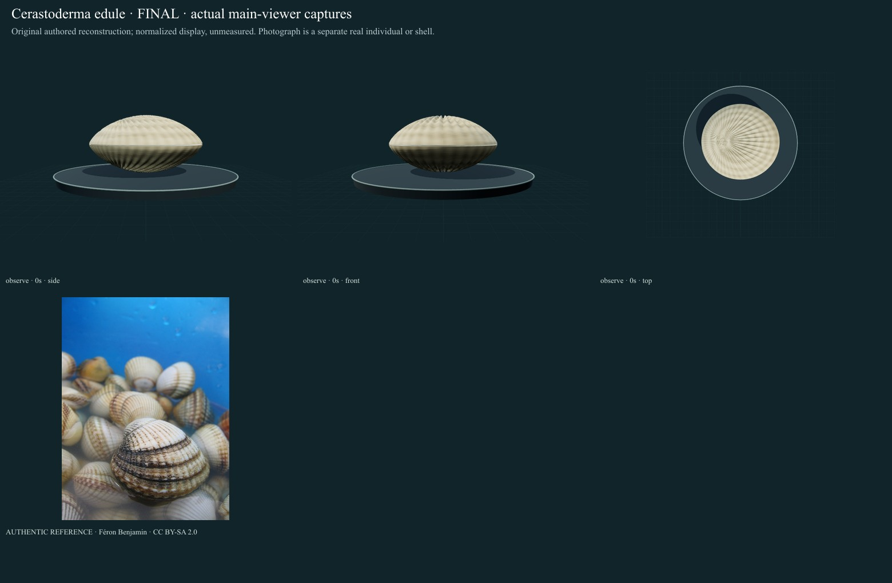
Final inspected states · full sheetReference: Féron Benjamin · CC BY-SA 2.0. Existing licensed delivered bytes retained; no new original-resolution retrieval claimed. Photo is a separate individual/shell, not a texture or measured geometry.
Exact delivered reference checksum
0748bb3130c808e7622d2dc0471c61a2419048596ed6119c1e6051c77f352eb5Movement scope
- Filtration — pending · unavailable: Biological process documented in the species context; no working simulation of this mechanism is claimed.
Evidence and its access scope
Ruditapes philippinarum · Manila clam
Inspect the current model ↗
Earlier defects: Same pale circular body as other clams, missing decussate sculpture and variable dark patterns.
Changes: Broader oval valves, fine radial/concentric relief and original broken brown zigzag/pigment fields distinct from the cockle and quahog.
Still unresolved: Lunule, cardinal teeth, pallial sinus and exact natural pattern variation remain incomplete. No individual in the multi-shell reference is geometrically fitted; filtration unavailable.
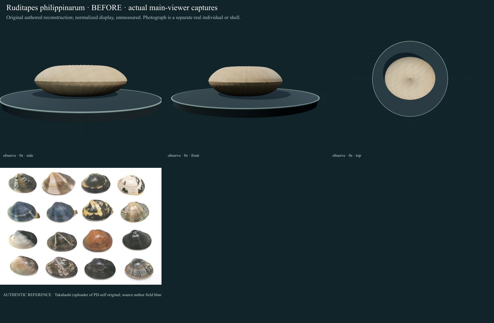
Before correction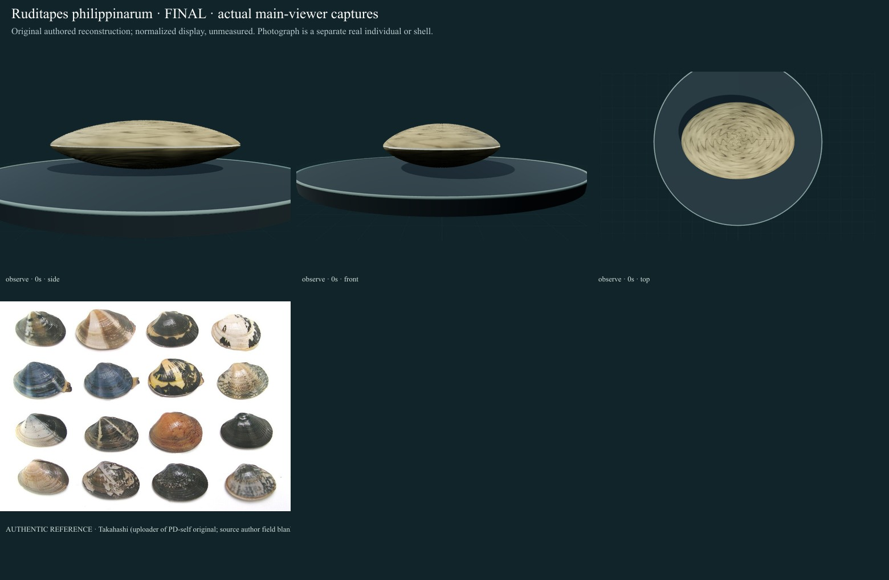
Final inspected states · full sheetReference: Takahashi (uploader of PD-self original; source author field blank) · Public domain. Existing licensed delivered bytes retained; no new original-resolution retrieval claimed. Photo is a separate individual/shell, not a texture or measured geometry.
Exact delivered reference checksum
947cecbeb4905b0bdf887cce935c163d7e9befbcf2fe9c39826b8acd611a94b2Movement scope
- Filtration — pending · unavailable: Biological process documented in the species context; no working simulation of this mechanism is claimed.
Evidence and its access scope
Mercenaria mercenaria · Hard clam
Inspect the current model ↗
Earlier defects: Generic round clam with uniform colour and repetitive fine rings.
Changes: Thicker selected valves and denser original growth lines with grey-brown age-band variation.
Still unresolved: The subovate/triangular outline and anterior umbones, ligament/teeth, siphons and burrowing posture still need measured reconstruction. No daily shell deposition or pumping physiology is modeled.
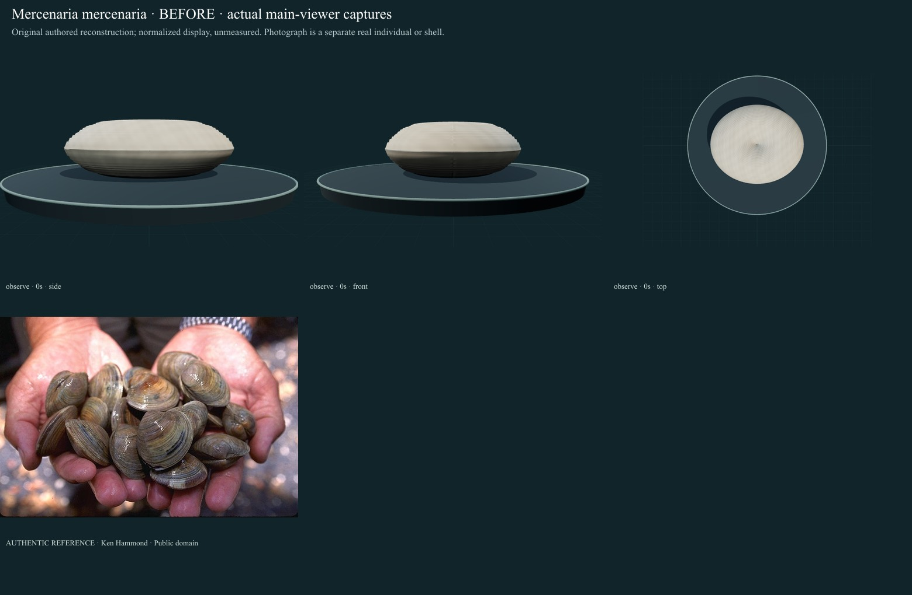
Before correction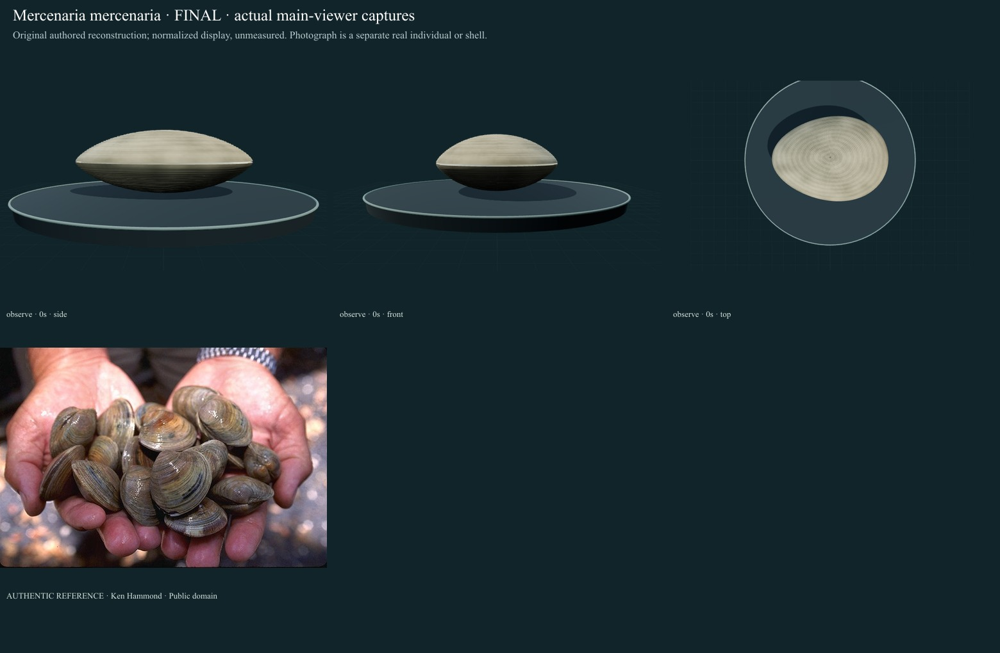
Final inspected states · full sheetReference: Ken Hammond · Public domain. Existing licensed delivered bytes retained; no new original-resolution retrieval claimed. Photo is a separate individual/shell, not a texture or measured geometry.
Exact delivered reference checksum
54d5a8288f13460a031fdd21d42fb148cd87a8379cf11f7576d5c2c4dfa21721Movement scope
- Filtration — pending · unavailable: Biological process documented in the species context; no working simulation of this mechanism is claimed.
Evidence and its access scope
Ensis ensis · Sword razor shell
Inspect the current model ↗
Earlier defects: Flat lens-like model with pointed ends and weak relationship to a long curved razor shell.
Changes: Distinct elongated curved outline, narrow paired valves, muted brown/purple numerical surface marks and smoother periostracal response.
Still unresolved: End gapes, united siphons, foot and vertical sediment support are not reconstructed. This exposed shell presentation is not the living buried feeding posture.
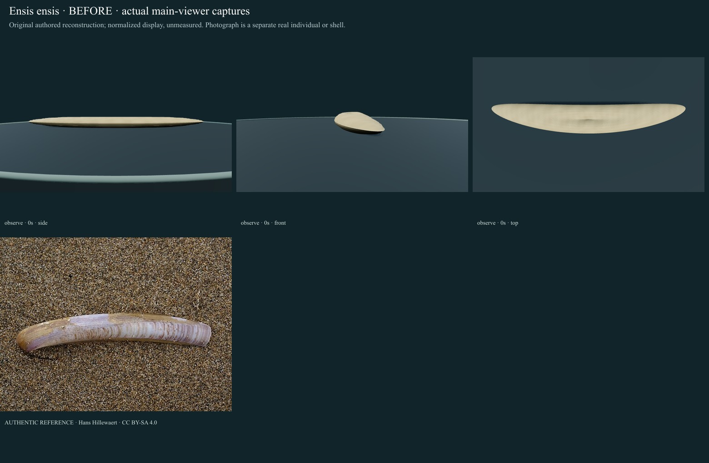
Before correction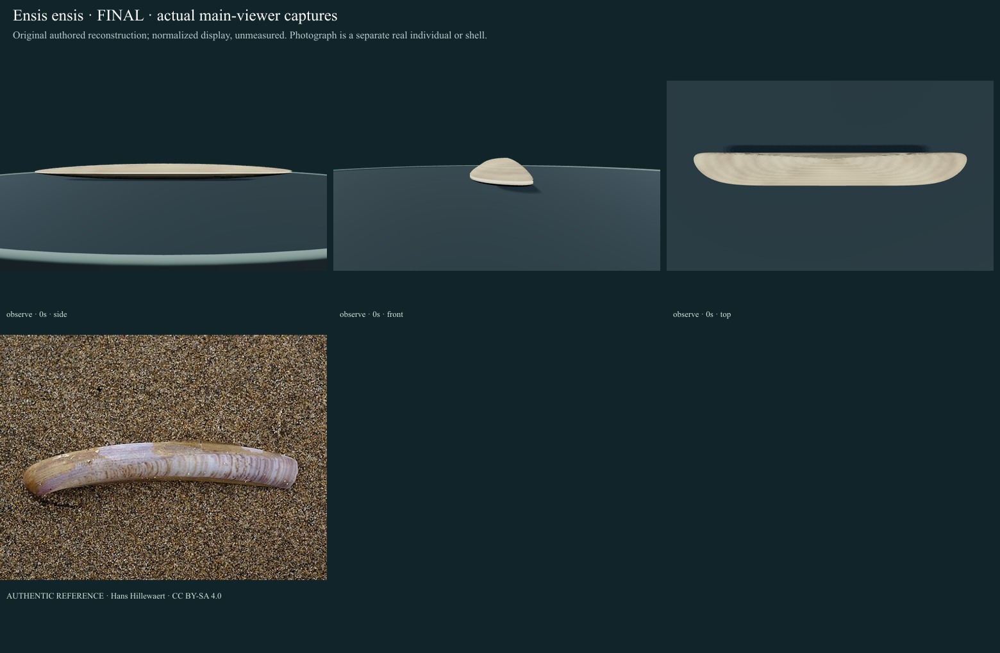
Final inspected states · full sheetReference: Hans Hillewaert · CC BY-SA 4.0. Existing licensed delivered bytes retained; no new original-resolution retrieval claimed. Photo is a separate individual/shell, not a texture or measured geometry.
Exact delivered reference checksum
712c61ac9bc24f24234077d60fe6e31711cb0b636e00db37d509af72156917a9Movement scope
- Filtration — pending · unavailable: Biological process documented in the species context; no working simulation of this mechanism is claimed.
Evidence and its access scope
Mya arenaria · Soft-shell clam
Inspect the current model ↗
Earlier defects: Generic circular clam identical in outline to unrelated records.
Changes: Elongated, lower oval valves with paler grey/olive growth sculpture and distinct inflation.
Still unresolved: Posterior gape, spoon-shaped chondrophore, fused siphons and substrate contact remain incomplete. Filtering and burrowing are unavailable.
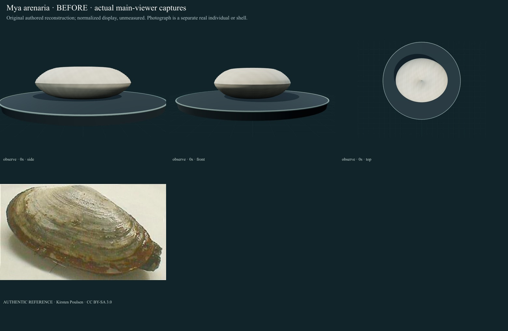
Before correction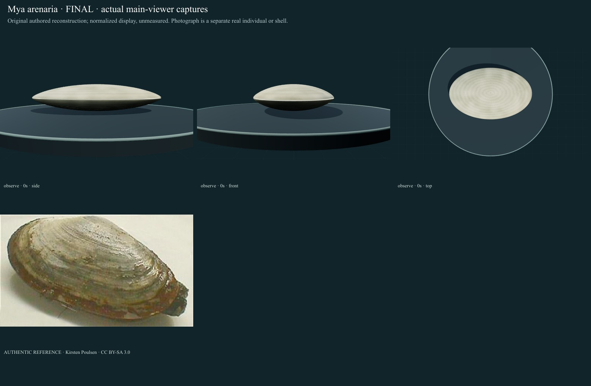
Final inspected states · full sheetReference: Kirsten Poulsen · CC BY-SA 3.0. Existing licensed delivered bytes retained; no new original-resolution retrieval claimed. Photo is a separate individual/shell, not a texture or measured geometry.
Exact delivered reference checksum
d32e7f08de1a46f57c43b3691d056502d0665e8e9eeeddd6f5162baa6f261d82Movement scope
- Filtration — pending · unavailable: Biological process documented in the species context; no working simulation of this mechanism is claimed.
Evidence and its access scope
Pinna nobilis · Fan mussel
Inspect the current model ↗
Earlier defects: A nearly flat triangular panel with no plausible paired-valve volume or shell relief.
Changes: Elongated wedge-shaped paired shell volume, broad rounded posterior edge, tapered basal end, original amber-brown relief and byssal attachment cues.
Still unresolved: Fine scales, byssus/substrate embedding and living encrustation are not measured; the model excludes the extensive epibionts visible in the photograph. No filtration mechanism.
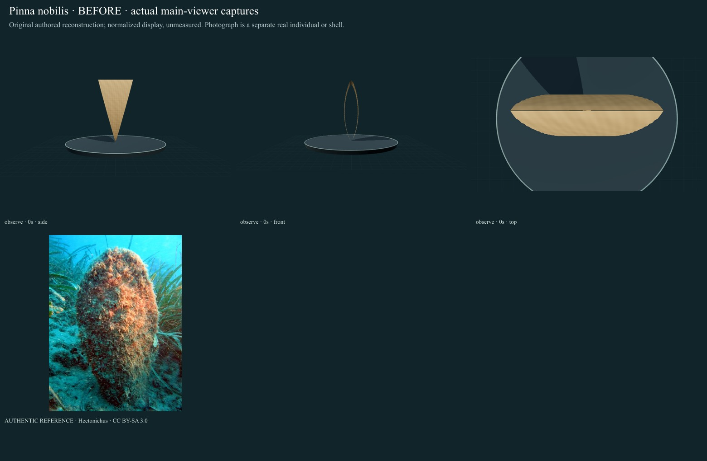
Before correction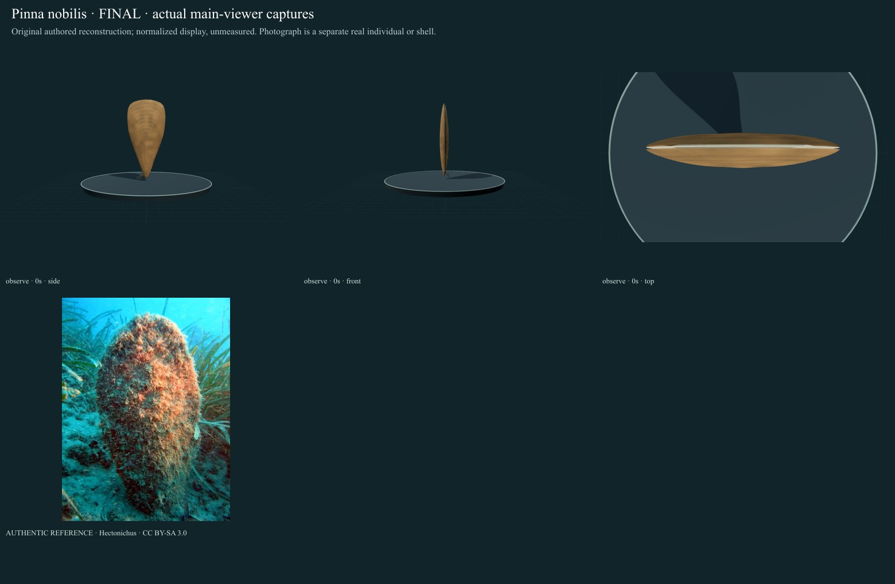
Final inspected states · full sheetReference: Hectonichus · CC BY-SA 3.0. Existing licensed delivered bytes retained; no new original-resolution retrieval claimed. Photo is a separate individual/shell, not a texture or measured geometry.
Exact delivered reference checksum
a428ff7d854bd20f8f73f258150f1c2db716e4cf798b336ca6d76d599966bd9bMovement scope
- Filtration — pending · unavailable: Suspension feeding is documented; the reconstruction has no gill-current or particle-capture mechanism. This species can also take small prey; no exclusive feeding mechanism is inferred.
Evidence and its access scope
- Checking your browser - reCAPTCHA — Qualitative morphology/ecology context; no measurements or rates imported. Source specimens, laboratory conditions and historical taxon concepts may differ from the reference image. Full retrieval limited; indexed context/image and specialist follow-up remain necessary.
- GBIF · Accepted species taxonomy — Taxonomic name/rank/family matching only; not behavior or native-range evidence.
- Licensed real organism reference and imaging context — Actual reference image and original caption/creator/license; not universal phenotype or biological validation.
Chlamys islandica · Iceland scallop
Inspect the current model ↗
Earlier defects: A copy of the queen scallop with sparse broad ribs and identical ears.
Changes: More elongated oval fan, selected 65 fine radial ridges/riblets, equally convex valves, altered ear proportion and orange/purple numerical pigment. Screenshot review removed reversed hinge-shoulder triangles and reduced circular growth-band dominance while strengthening radial relief.
Still unresolved: Fine scaled riblets may be far more numerous in large animals; exact counts/ears/byssal notch/ctenolium are not fitted. The clap is a hinge study, not swimming. Narrow byssal/auricular notches are simplified to avoid overlapping loft triangles. Rib amplitude, radial fan angles, pigment and growth rings remain authored rather than measured; no biological swimming propulsion is implemented.
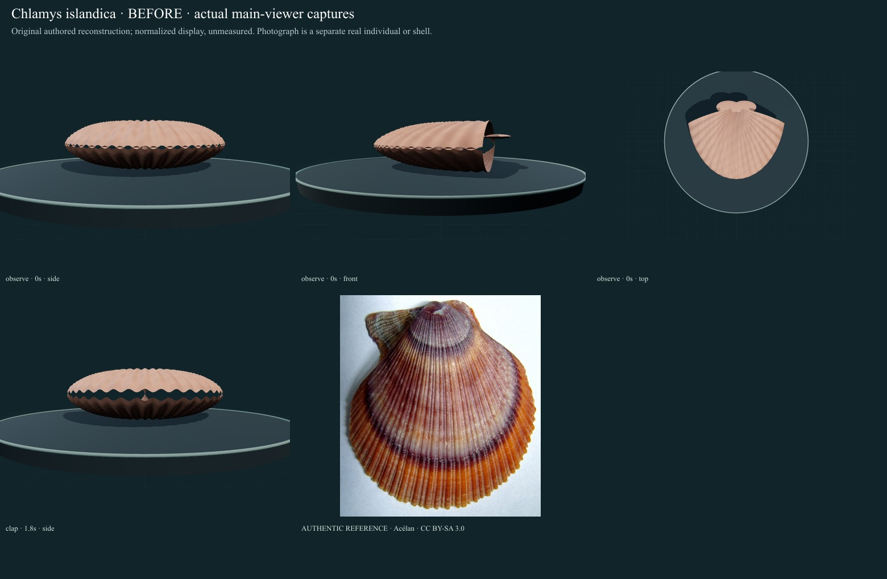
Before correction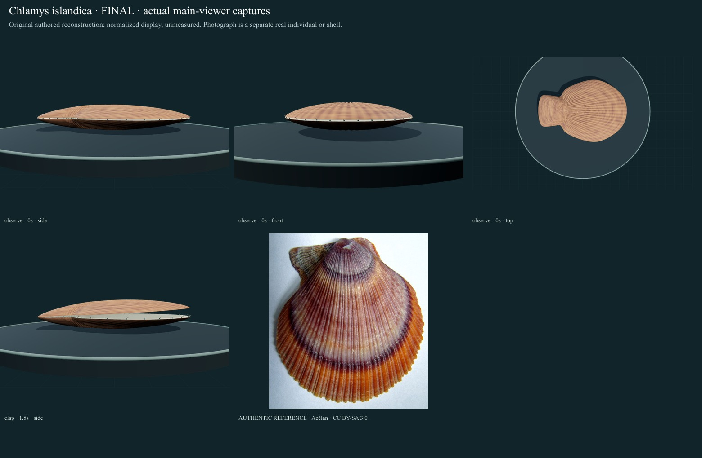
Final inspected states · full sheetReference: Acélan · CC BY-SA 3.0. Existing licensed delivered bytes retained; no new original-resolution retrieval claimed. Photo is a separate individual/shell, not a texture or measured geometry.
Exact delivered reference checksum
a928b1ffc13945343d0267187f84cb1756de40f7774943eb444aa55c0fb0d66aMovement scope
- Valve-opening study · partial: Authored reference reconstruction from qualitative morphology and the separately licensed image. Shape, pigmentation, stage, dimensions and playback are not measured or independently validated. Appendage/deformation controls are partial studies; feeding, forces, fluid dynamics and calibrated locomotion are absent.
Evidence and its access scope
Aequipecten opercularis · Queen scallop
Inspect the current model ↗
Earlier defects: Same pale body as Iceland scallop, weak generic ribs and uniform colour.
Changes: Rounder fan distinct from Chlamys, selected 20 stronger radial ribs, convex upper/lower valves and muted original pink/cream pattern. Screenshot review removed reversed hinge-shoulder triangles and reduced circular growth-band dominance while strengthening radial relief.
Still unresolved: Anterior-ear asymmetry, margin fit, exact patterns and soft tissues remain approximate. Valve movement excludes jetting, thrust and calibrated adductor timing. Narrow byssal/auricular notches are simplified to avoid overlapping loft triangles. Rib amplitude, radial fan angles, pigment and growth rings remain authored rather than measured; no biological swimming propulsion is implemented.
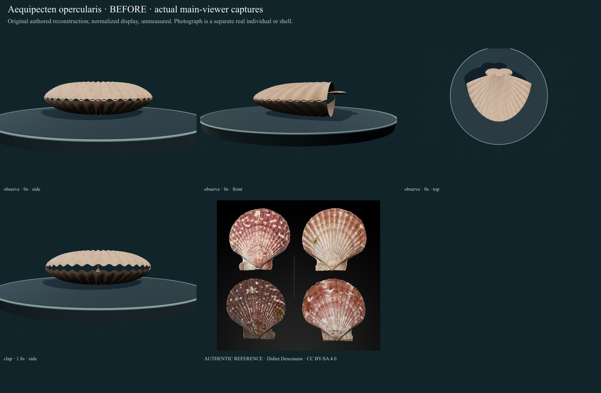
Before correctionFinal inspected states · full sheetReference: Didier Descouens · CC BY-SA 4.0. Existing licensed delivered bytes retained; no new original-resolution retrieval claimed. Photo is a separate individual/shell, not a texture or measured geometry.
Exact delivered reference checksum
e6238c0e5e116c42e27e2fc625d15f7179f7146b496ef07f52634da9e1e7d002Movement scope
- Valve-opening study · partial: Authored reference reconstruction from qualitative morphology and the separately licensed image. Shape, pigmentation, stage, dimensions and playback are not measured or independently validated. Appendage/deformation controls are partial studies; feeding, forces, fluid dynamics and calibrated locomotion are absent.
Evidence and its access scope